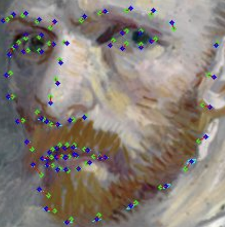
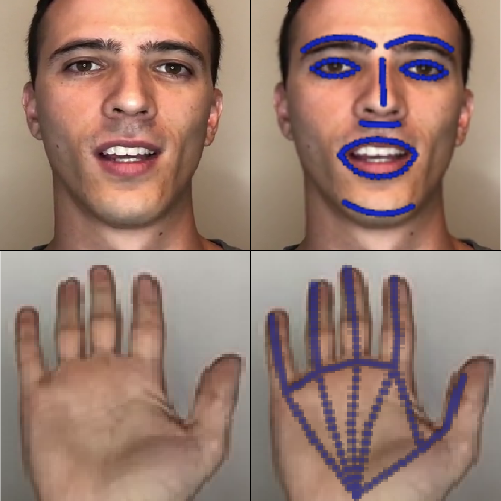

|
David Ferman David Ferman is a Deep Learning / Computer Vision researcher, currently working at Flawless AI, with supervision from Pablo Garido, PhD. His current work focuses on 2D/3D facial landmark detection, facial semantic parsing, transformer/attention-based computer vision techniques, and multi-dataset/domain learning. He has previously worked as a Research Engineer at AI Foundation under supervision from Gaurav Bharaj, PhD, as Senior Machine Learning Engineer at Doma , and is finishing up his M.S. in Computer Science from UT Austin. David also previously worked as an illusion show producer, after being a finalist on America's Got Talent and a world champion/record-holding juggler. |
|  |
Multi-Domain Multi-Definition Landmark Localization for Small
Datasets
David Ferman, Gaurav Bharaj European Conference on Computer Vision (ECCV), 2022 |
|  |
Generative Landmarks
David Ferman, Gaurav Bharaj Eurographics (Computer Graphics Forum) Poster, 2021 |